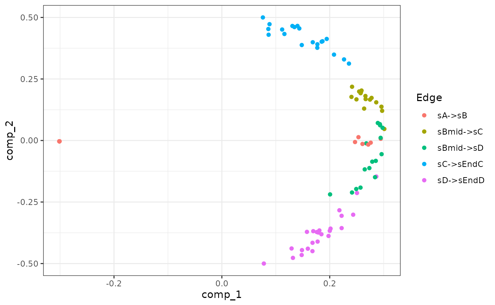

generate_experiment() samples cells along the different simulations.
Two approaches are implemented: sampling from an unsynchronised population of single cells (snapshot) or
sampling at multiple time points in a synchronised population (time series).
generate_experiment(model)
list_experiment_samplers()
experiment_snapshot(
realcount = NULL,
map_reference_cpm = TRUE,
map_reference_ls = TRUE,
weight_bw = 0.1
)
experiment_synchronised(
realcount = NULL,
map_reference_cpm = TRUE,
map_reference_ls = TRUE,
num_timepoints = 8,
pct_between = 0.75
)A dyngen intermediary model for which the simulations have been run with generate_cells().
The name of a dataset in realcounts. If NULL, a random
dataset will be sampled from realcounts.
Whether or not to try to match the CPM distribution to that of a reference dataset.
Whether or not to try to match the distribution of the library sizes to that of the reference dataset.
[snapshot] A bandwidth parameter for determining the distribution of cells along each edge in order to perform weighted sampling.
[synchronised] The number of time points used in the experiment.
[synchronised] The percentage of 'unused' simulation time.
A dyngen model.
experiment_snapshot() samples the cells using the length of each edge in the milestone network as weights.
See Supplementary Figure 7A from the dyngen paper for an illustration of how these weights are computed.
experiment_synchronised() samples the cells along the simulation timeline by binning it into num_timepoints
groups separated by num_timepoints-1 gaps.
See Supplementary Figure 7B from the dyngen paper for an illustration of how the timepoint groups are computed.
names(list_experiment_samplers())
#> [1] "snapshot" "synchronised"
model <-
initialise_model(
backbone = backbone_bifurcating(),
experiment = experiment_synchronised()
)
# \donttest{
data("example_model")
model <- example_model %>% generate_experiment()
plot_experiment_dimred(model)

# }